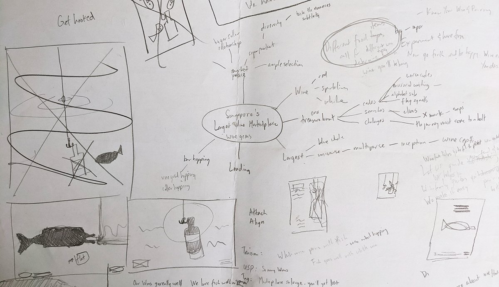
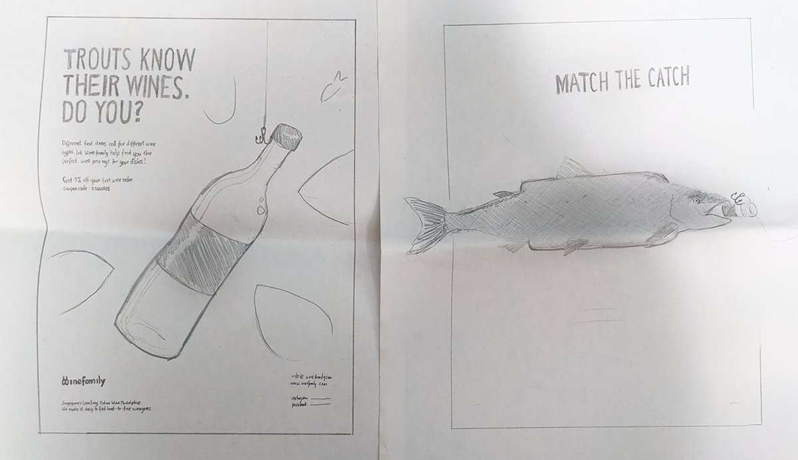
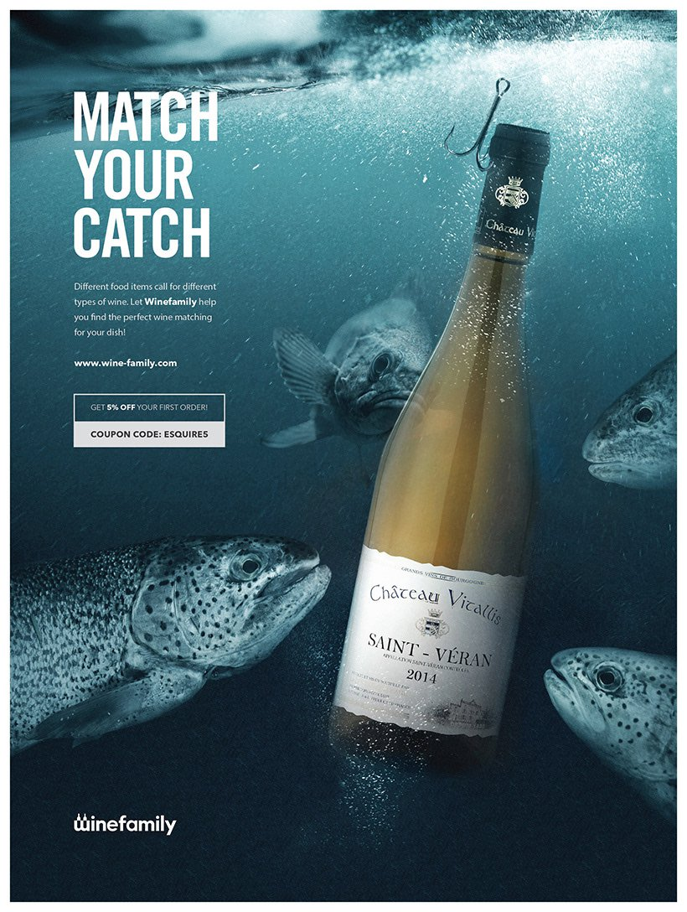

Advertising: Winefamily - Match Your Catch
Challenge
Winefamily urgently needed to raise its brand awareness and came to me with a submission deadline (in 3 days time) for a print ad on the men's magazine, Esquire (Singapore).
Solution
I provided creative direction, including the key visual and tag line. The idea is based on a truism that medium-bodied wines pair well with fish.
1. Ideation Phase
I discussed with the business owner what might Winefamily's strengths be in the local scene, and sketched a mind map to generate ideas for the tagline and key visual. I began the exercise by listing truisms around wines such as:
- White wines go well with light-intensity meats like fish and chicken
- Red wines are best served a few degrees below room temperature
2. Design phase
 I provided two final ideas:
- Tagline: "Match the catch". Key visual: A bottle of white wine used as fishing bait, surrounded by curious trouts.
- Tagline: "Trouts know their wines. Do you?". Key visual: A trout having swallowed a wine bottle.
This was a fairly quick process due to the time constraint. Client was pleased with both of the options but felt that, for option 2, it was not obvious that it was a wine bottle. We arrived at the following:
